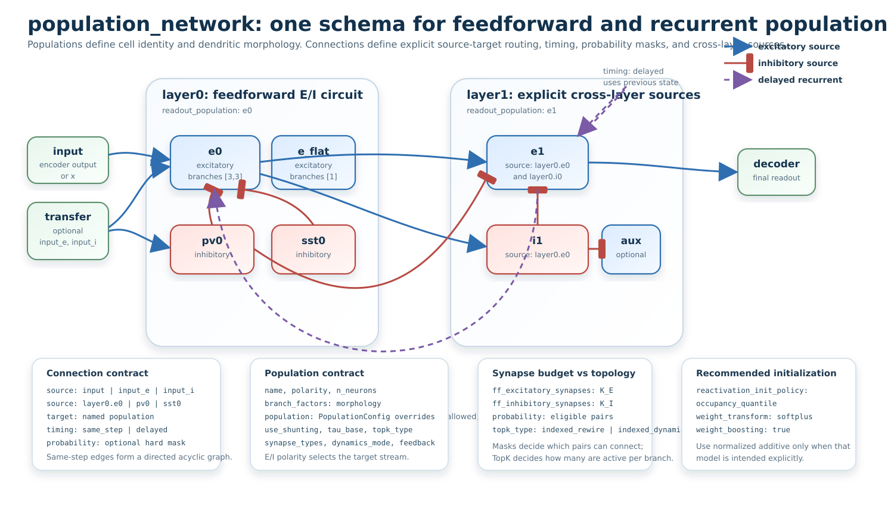
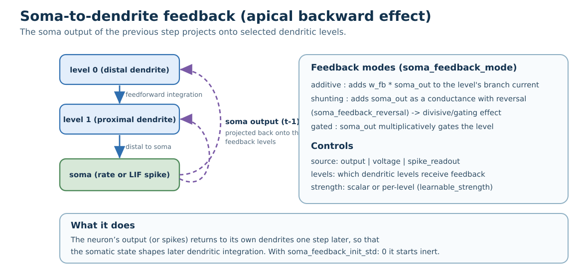

Network Architectures
The framework implements a three-part model: encoder (input processing), core network (computation), and decoder (output mapping). This page documents all core network types and their configuration.
Architecture Pipeline
Every model follows the encoder-core-decoder pattern:
Encoder: processes raw input (Identity, MLP, or CNN)
Core network: main computational unit (documented below)
Decoder: maps to output space (Identity or MLP)
The core network type is set via model.core.type in the YAML config file.
Visual Overview
The diagrams below are meant to answer the first engineering question people
usually have about this codebase: what exactly is a dendritic neuron here, and
how do TopKLinear, branch factors, E/I routing, and somatic synapses fit
together?

Network-level view of the feedforward E/I core. TransferLayer produces
(x_E, x_I). Each ExcitationInhibitionLayer updates the inhibitory
population first and then feeds that output into the excitatory population.
The core network output is always the final excitatory state.

Single-neuron view of one dendritic tree. Every DendriticBranchLayer can
receive direct excitatory and inhibitory synapses, and parent layers also
receive aggregated child-branch input through BlockLinear.
The most important config-to-code mapping is:
excitatory_layer_sizesandinhibitory_layer_sizeschoose how many dendritic trees exist in each populationexcitatory_branch_factorsandinhibitory_branch_factorschoose the branching pattern inside each tree*_synapses_per_branchchooses the row-wiseKused by eachTopKLinearbanksomatic_synapsesdecides whether the soma layer also has direct E/I synapsesuse_shuntingchooses divisive versus additive integration inside eachDendriticBranchLayer
Core Network Types
Type string |
Description |
Aliases |
|---|---|---|
|
E-I network with shunting (divisive) inhibition |
|
|
E-I network with raw additive (subtractive) inhibition, |
|
|
E-I network with additive inhibition plus explicit voltage normalization |
|
|
Flattened dendrites with shunting inhibition |
|
|
Flattened dendrites with raw additive inhibition |
|
|
Flattened dendrites with normalized additive inhibition |
|
|
Generic E-I; reads |
|
|
E-I with signed weights, |
|
|
Unified E-I, supports feedforward and recurrent |
|
|
Canonical feedforward/recurrent layers with multiple named populations, per-population morphology, and directed edges |
|
|
Gated Recurrent Unit |
|
|
Long Short-Term Memory |
|
|
Standard RNN |
|
|
Multi-layer perceptron baseline |
|
Shunting/additive mode selection
For structured feedforward E-I networks, model.core.type is the canonical
selector. dendritic_shunting and flat_shunting run divisive shunting;
dendritic_additive and flat_additive run raw additive/subtractive
integration. dendritic_normalized_additive and
flat_normalized_additive opt into additive voltage normalization. If the
morphology block contains a contradictory use_shunting or
use_additive_normalization
value, the builder emits a warning and the type alias wins. Use the generic
einet type when you intentionally want morphology.use_shunting to be
the selector. For additive modes, prefer
reactivation.init_policy: "occupancy_quantile"; additive YAML configs that
omit init_policy use this data-driven policy by default, while explicit
policies remain reproducible.
For recurrent unified E-I networks, plain ei_unified keeps the
population-level fields as the source of truth. The convenience aliases
rnn_dendritic_shunting, rnn_dendritic_additive,
rnn_dendritic_normalized_additive, rnn_flat_shunting,
rnn_flat_additive, and rnn_flat_normalized_additive rewrite every
excitatory and inhibitory
population to the alias contract; the flat aliases force
branch_factors: [1]. The
population_network likewise uses population_defaults and per-population
population blocks as the source of truth rather than inheriting top-level
morphology fields.
population_network is the canonical layer schema for feedforward or
recurrent E/I composition. The classical feedforward E/I layer is represented
as two populations plus directional same-step edges:


A two-layer population_network example. Each layer holds named populations
(e0/i0, e1/i1). Solid edges are same-step and must form an
acyclic DAG within a timestep (input->i0, input->e0, i0->e0;
cross-layer layer0.e0->layer1 and layer0.i0->e1). Dashed edges are
delayed (read the previous timestep), enabling recurrence and later->earlier
feedback (e1->e1 and layer1.e1->layer0.e0). The readout population of
the final layer feeds the decoder.
model:
core:
type: population_network
population_network:
layers:
- name: layer0
readout_population: e
populations:
- name: i
polarity: inhibitory
n_neurons: 32
branch_factors: [1]
- name: e
polarity: excitatory
n_neurons: 128
branch_factors: [4, 4]
connections:
- source: input
target: i
- source: input
target: e
- source: i
target: e
Connections are directed records with source and target population
names. timing: same_step is the feedforward/default edge and is validated
as an acyclic directed graph within each layer. timing: delayed is the
recurrent edge and reads the source population’s previous-timestep output, so
bidirectional E/I interactions are possible without an instantaneous
algebraic loop. probability optionally samples a frozen structural mask;
the target population’s E/I synapse-count fields determine how many active
synapses per branch are selected inside the allowed mask. Pathway polarity is
inferred from the source population or named input stream.
External sources are named. source: input is the compatibility stream and
keeps the old behavior. When population_network.use_transfer: true is set,
source: input_e receives the excitatory stream returned by
TransferLayer and source: input_i receives the inhibitory stream. This
allows an old independent-pathway transfer split to be represented explicitly:
model:
core:
type: population_network
population_network:
use_transfer: true
transfer_params:
input_mode: 0
independent_pathways: true
excitatory_dim: 392
inhibitory_dim: 392
layers:
- name: layer0
readout_population: e
populations:
- name: i
polarity: inhibitory
n_neurons: 32
branch_factors: [1]
- name: e
polarity: excitatory
n_neurons: 128
branch_factors: [4, 4]
connections:
- source: input_e
target: i
- source: input_e
target: e
- source: input_i
target: e
- source: i
target: e
If use_transfer is false, input, input_e, and input_i all
refer to the same projected input tensor. In stacked population networks,
source: input remains a compatibility shorthand for the previous layer
readout stream. For explicit cross-layer routing, use qualified sources of the
form source: layer_name.population_name:
layers:
- name: layer0
readout_population: e0
populations:
- name: i0
polarity: inhibitory
n_neurons: 32
branch_factors: [1]
- name: e0
polarity: excitatory
n_neurons: 128
branch_factors: [3, 3, 3]
connections:
- source: input
target: i0
- source: input
target: e0
- name: layer1
readout_population: e1
populations:
- name: i1
polarity: inhibitory
n_neurons: 16
branch_factors: [1]
- name: e1
polarity: excitatory
n_neurons: 64
branch_factors: [3, 3, 3]
connections:
- source: layer0.e0
target: i1
- source: layer0.e0
target: e1
- source: layer0.i0
target: e1
- source: i1
target: e1
Same-step qualified sources must point from earlier layers to later layers. Delayed qualified sources are allowed on recurrent target layers and use the source population’s previous-timestep output, so they do not create an instantaneous algebraic loop.
For migration from the older feedforward einet examples, see
configs/examples/standard_mnist_population_network.yaml,
configs/examples/standard_mnist_normalized_additive_population_network.yaml,
configs/examples/standard_cifar10_population_network.yaml,
configs/examples/cifar10_128_333_40e10i_population_network.yaml, and
configs/examples/cifar10_two_layer_population_network.yaml. These keep
the old sizes, synapse counts, transfer settings, and readout heads aligned
while moving the computation into explicit named-population routing. For
legacy input_mode=1 configs, this means a single E population with direct
input_i inhibition rather than explicit I cells. The separate
configs/examples/population_network_two_layer.yaml file intentionally
demonstrates additional cross-layer population routing beyond the old
two-layer feedforward path.
When input_projection_dims is used together with use_transfer: true,
the projection is applied to the compatibility/excitatory stream
(input/input_e). The inhibitory transfer stream (input_i) keeps the
dimension produced by TransferLayer, matching the unified E/I stack’s
existing convention.
Canonical examples are
configs/examples/population_network_feedforward.yaml,
configs/examples/population_network_heterogeneous_feedforward.yaml,
configs/examples/population_network_recurrent_pyr_pv_sst.yaml,
configs/examples/population_network_synapse_types_ampa_nmda_gaba.yaml,
configs/examples/population_network_spiking.yaml, and
configs/examples/population_network_soma_feedback.yaml. The
standard_*_population_network.yaml files are parity examples that mirror
older einet configurations using the canonical population-network schema.
Transformer MLP/FFN replacement follows the same shared model.core.type
aliases when a shunting/additive alias is present. If model.core.type is a
generic replacement type such as dendritic_ffn, the transformer builder
reads model.core.morphology.use_shunting directly.
ExcitationInhibitionNetwork
The primary architecture. Each network consists of a TransferLayer followed by one or more ExcitationInhibitionLayer instances. Each layer pairs an excitatory DendriNet population with an inhibitory population (DendriNet or MLP).
Forward pass: input passes through the TransferLayer, producing separate excitatory and inhibitory signals. At each layer, the inhibitory population processes the excitatory input first; its output then modulates the excitatory population via shunting or additive inhibition. The final layer’s excitatory output is the network output.
In code terms, the main forward rule is:
(x_E, x_I) = TransferLayer(x)
h_I^(l) = inhibitory_cells(h_E^(l-1), h_I^(l-1))
h_E^(l) = excitatory_cells(h_E^(l-1), h_I^(l))
This is implemented by ExcitationInhibitionNetwork.forward calling
ExcitationInhibitionLayer.forward layer by layer.
TransferLayer
Controls how input is routed to the E and I pathways.
input_modeSelects the inhibitory-input convention used by the legacy feedforward E/I builder.
input_mode: 0builds explicit inhibitory cells wheneverarchitecture.inhibitory_layer_sizescontains positive sizes.input_mode: 1preserves the older direct-inhibition path: theTransferLayerinhibitory stream is fed directly into E dendrites and explicit I cells are not built by default, even if stale inhibitory sizes remain in the config.input_mode1_build_inhibitory_populationOptional feedforward opt-in for newer experiments that intentionally want
input_mode: 1plus explicit inhibitory cells. The legacy-compatible default isfalse.require_explicit_direct_inhibitory_streamOptional safety flag. When
true, direct input-mode-1 inhibition requiresallow_direct_inhibitory_stream: true. The deprecatedallow_direct_inhibitory_inputspelling is still normalized by the legacy config adapter, but new configs should not use it. The default isfalsefor compatibility with existing configs.independent_pathwaysControls raw input routing independently of inhibitory-population existence. If
True, input dimensions are split between E and I streams. IfFalse, the full input is duplicated to both streams.excitatory_dim,inhibitory_dimExplicit dimension split. Defaults to
input_dim / 2each.output_activationOptional nonlinearity on the split outputs:
"sigmoid","relu","tanh","softplus", orNone.For shunting E-I models with positive weight transforms, this is also the recommended place to clamp normalized raw inputs back to a nonnegative range, e.g.
output_activation: "relu".
Config path: model.core.transfer.
model:
core:
transfer:
input_mode: 1
independent_pathways: false
output_activation: null
E-I Network Configuration
model:
core:
type: dendritic_shunting
architecture:
excitatory_layer_sizes: [100, 50]
inhibitory_layer_sizes: [20, 10]
excitatory_branch_factors: [3, 3, 3, 3]
inhibitory_branch_factors: [1]
inhibitory_network_type: "dendritic"
connectivity:
ee_synapses_per_branch_per_layer: [40]
ei_synapses_per_branch_per_layer: [0]
ie_synapses_per_branch_per_layer: [10]
ii_synapses_per_branch_per_layer: [0]
morphology:
somatic_synapses: false
use_shunting: true
weight_transform: "softplus"
dbl_init_method: "analytical_expectation"
sparsity:
init_method: "xavier_normal"
type: "standard"
gamma: 1.0
reactivation:
enabled: true
type: "param_tanh"
init_m: 1.5
init_b: 0.5
DendriNet
A single-population dendritic network with hierarchical branching. Used as the building block within each E-I layer.
branch_factors defines the dendritic tree. For example, [3, 2] creates
two levels of branching: 3 branches at the first level, each splitting into 2,
giving 6 distal branches per soma neuron.
The architecture is built from distal to soma:
Level 0 (most distal): receives synaptic input from external sources
Intermediate levels: aggregate child branches via BlockLinear
Soma level: final aggregation, produces the layer output
If somatic_synapses is True, the soma level also receives direct
synaptic input in addition to branch aggregation.
Two implementation details are easy to miss:
each branch layer receives the same external
x_Eand optionalx_I; direct synapses are not restricted to the most distal levelthe tree is vectorized across neurons by flattening all branches at a given depth into one feature axis, so
output_dimat a branch layer isn_soma * branches_at_that_level
Key parameters:
n_somaNumber of output neurons.
branch_factorsList of integers defining the branching tree structure.
excitatory_input_dim,excitatory_synapses_per_branchExcitatory input specification per branch.
inhibitory_input_dim,inhibitory_synapses_per_branchInhibitory input specification per branch.
somatic_synapsesWhether the soma level receives direct synaptic input.
use_shuntingTruefor shunting (divisive) inhibition;Falsefor additive.
DendriticBranchLayer
The core computation unit. Each branch layer contains synaptic input layers, optional branch aggregation, and a post-voltage nonlinearity.
Shunting Mode
When use_shunting=True, the voltage is computed as a normalized ratio:
numerator = E + E_rec + V_branch
denominator = 1 + E + E_rec + g_branch + I + I_rec
V = numerator / (denominator + epsilon)
output = reactivation(V)
Where E is the excitatory synaptic current (TopKLinear), I is
inhibitory, V_branch is aggregated child-branch input (BlockLinear),
g_branch is the branch conductance, and E_rec, I_rec are recurrent
inputs (used only in recurrent mode). The current implementation uses these raw
terms directly in the denominator. Epsilon defaults to 1e-8.
Additive Mode
When use_shunting=False:
V = E + E_rec + V_branch - I - I_rec
output = reactivation(V)
Optional additive normalization: V = (V - mean) / (std + epsilon).
Components
branch_excitationTopKLinear – excitatory synaptic input.
branch_inhibitionTopKLinear – inhibitory synaptic input (optional).
branch_recurrentTopKLinear – recurrent excitatory input (recurrent mode only).
branch_rec_inhibitionTopKLinear – recurrent inhibitory input (recurrent mode only).
branches_to_outputBlockLinear or EfficientBlockLinear – aggregates child branches.
reactivationParametric nonlinearity applied to the voltage output.
Operator-Level View

TopKLinear and BlockLinear control different kinds of structure.
TopKLinear enforces sparse external synapses per branch. BlockLinear
enforces tree-structured aggregation from sibling branches to their parent.
For engineering work, the key distinction is:
Kcontrols how many external inputs each branch keepsbranch_factorcontrols how many child branches are grouped by the next parent branchthese are independent controls and they act at different points in the forward pass
TopKLinear
Sparse synaptic layer. For each output neuron, only the K largest-weight
connections are active; all others are masked to zero.
KNumber of active synapses per output neuron.
weight_transformTransformation applied to raw parameters before masking.
"exp"(default) – always positive."softplus"– always positive, smoother gradient."relu"– non-negative, can be exactly zero."identity"– signed weights (used bydendritic_mlp).init_methodWeight initialization:
"xavier_normal","xavier_uniform","kaiming_normal","kaiming_uniform","orthogonal","normal","uniform","eye".noise_levelGaussian noise added during top-K selection (default: 0.0).
weight_norm_orderOptional L-p normalization per output neuron.
gammaPost-normalization scaling factor (default: 1.0).
Config path: model.core.sparsity.
TopK Variants
Set via model.core.sparsity.type:
standard, stochastic, variance, and dense_to_sparse all keep a
dense trainable score/weight matrix and apply sparse selection on top of it.
They are biologically useful sparse-selection models, but they do not reduce
the underlying matrix-multiply memory/compute in proportion to K. For very
large, high-sparsity networks where memory is the bottleneck, prefer
indexed or indexed_dynamic.
standardDense-score deterministic TopK (default). Stores an
out_features x in_featurestrainable score/weight matrix and selects the current topKentries per output on each forward pass. The active set can change over training because selection is recomputed from the dense score matrix.stochasticDense-score stochastic TopK. It stores the same dense score matrix as
standard, but samples active synapses from a rank-probabilistic rule controlled bysparsity.temperature.sparsity.ultrafast: trueuses a faster noisy-TopK approximation.varianceDense-score variance-aware TopK. It tracks input activation variance and ranks synapses by weight strength times input variance.
dense_to_sparse/annealed_topkDevelopmental pruning TopK. It stores the same dense score matrix as
standard, starts with a dense or high-Kactive set, and gradually anneals to the configured synapse countK. This lets all allowed synapses receive gradients early before the model commits to a sparse morphology. Additional parameters live undersparsity.dense_to_sparse:initial_densityorinitial_k,start_step,end_step,update_interval,schedule("linear","cubic","cosine", or"step"),freeze_on_end,advance_on_forward, andprune_metric.deepstDynamic rewiring with density targets. Additional parameters under
sparsity.deepst:excitatory_target_density,inhibitory_target_density,sigma,rewiring_mode("global"/"local"),rewire_frequency.indexedFixed-index sparse synapses. Unlike
standardTopK, this layer does not store a denseout_features x in_featurestrainable matrix. It stores exactlyout_features x Ktrainable weights plus fixed presynaptic integer indices. The topology is fixed: non-indexed synapses do not exist and cannot later enter the active set.indexed_dynamicCandidate-pool sparse TopK. It stores
out_features x Ccandidate synapses, whereC = sparsity.indexed.candidate_sizeandC >= K. Each forward pass selectsKactive candidates, so inactive candidates can later become active without storing the full dense matrix. Setsparsity.indexed.selection: stochasticto use rank-probabilistic selection inside the candidate pool.
Example low-parameter dynamic sparse config:
model:
core:
sparsity:
type: indexed_dynamic
temperature: 0.5
indexed:
candidate_size: 256
selection: stochastic # standard or stochastic
seed: 42
output_chunk_size: 2048
Example dense-to-sparse developmental pruning config:
model:
core:
sparsity:
type: dense_to_sparse
dense_to_sparse:
initial_density: 1.0
start_step: 0
end_step: 4000
update_interval: 50
schedule: cubic
freeze_on_end: true
prune_metric: weight
BlockLinear
Block-diagonal linear layer for aggregating child-branch activations. Each
output neuron receives exactly block_size inputs from consecutive positions,
where block_size = in_features / out_features.
EfficientBlockLinear is a memory-efficient variant that uses reshape
operations instead of a sparse matrix. Same API and behavior.
Config path: model.core.blocklinear.
Transformer FFN Replacement
The AlexNet/VGG replacement path and the transformer replacement path share the
same conceptual split: choose a backbone, choose the layers/modules to replace,
and describe the dendritic replacement with model.core. The difference is
mechanical: AlexNet/VGG are sequential torchvision modules, while transformer
MLPs sit inside decoder blocks. For transformers the target is described by
model.transformer_replacement and the dendritic FFN is described by the
usual model.core fields.
The replacement module preserves the transformer MLP contract
The experimental DendriticFFNReplacement module implements this token-wise
contract:
DendriNet supplies sparse hierarchical branch computation, and the final
linear projection maps the dendritic soma population back to the transformer
hidden dimension. For a DeepSeek/Llama-style gated FFN,
the dense parameter count is approximately
For DeepSeek-V3 public configs, d = 7168 and
d_ff = 18432, so one dense FFN has about 396M parameters. A dendritic
replacement with 512 soma units, morphology [3, 3], and 40 indexed
synapses per branch stores only the active indexed synapses plus the output
projection.
model:
transformer_replacement:
enabled: true
model_name: deepseek-ai/DeepSeek-V3
layers: [0, 1, 2]
target_module: mlp
layers_attr: model.layers
input_transform: signed_split
model_kwargs:
device_map: auto
torch_dtype: auto
core:
type: dendritic_ffn
architecture:
excitatory_layer_sizes: [512]
excitatory_branch_factors: [3, 3]
connectivity:
ee_synapses_per_branch_per_layer: [40]
morphology:
use_shunting: true
weight_transform: softplus
sparsity:
type: indexed_dynamic
temperature: 0.5
indexed:
candidate_size: 256
selection: stochastic
seed: 42
The YAML can be applied to a loaded Hugging Face model with:
from dendritic_modeling.networks.architectures.transformer import (
apply_transformer_replacement_config,
load_transformer_with_dendritic_replacements,
)
model, records = load_transformer_with_dendritic_replacements(
config.model.transformer_replacement,
config.model.core,
)
# Or, if the model has already been loaded:
records = apply_transformer_replacement_config(
model,
config.model.transformer_replacement,
config.model.core,
)
Scientific caveat: transformer residual streams, FFN hidden activations, and
FFN outputs are signed. A conductance-style DendriNet with positive synaptic
weights is most biologically interpretable when its presynaptic activities are
non-negative. input_transform="signed_split" converts a signed vector
x into [ReLU(x), ReLU(-x)] so positive conductances can still represent
both polarities. The final W_out is signed, because the transformer block
must return a signed residual update.
This replacement path should be trained first by block-output distillation: freeze the original transformer, collect inputs and original MLP outputs for the target layers, and train the dendritic replacement to match those outputs before evaluating full language-model perplexity.
The dedicated trainer is selected by training.transformer_replacement and
currently supports three teacher-data sources:
synthetic_mlpGenerates random transformer hidden states and a small teacher MLP. This is the smoke-test path used to confirm that the dendritic FFN can learn a token-wise MLP map.
hidden_cacheReads saved tensors of hidden states and teacher MLP outputs. This is the most memory-efficient route when a large teacher such as DeepSeek-V3 is run once to build an activation cache.
hf_textLoads a Hugging Face causal LM, registers hooks on the selected MLP modules, samples token windows from a text file, and trains the dendritic replacement from the captured
(hidden_state, teacher_mlp_output)pairs.
PYTHONPATH=src:$PYTHONPATH python -m \
dendritic_modeling.scripts.training.train_transformer_replacement \
configs/examples/transformer_replacement_synthetic_distillation.yaml
The saved replacement files contain one state dict per layer and can be loaded
back into a patched model with the same model.transformer_replacement and
model.core settings.
Activation Functions
Post-voltage nonlinearities applied at each branch layer. Set via
model.core.reactivation.type.
param_tanh(default)(tanh(m * (V - b)) + 1) / 2with learnable slopemand midpointb. Output range is [0, 1]. Initialized withinit_mandinit_b.param_tanh_only_mSame as
param_tanhbutbis fixed (not trainable).param_linear_sigmoid,param_linear_tanh,param_linear_tanh_transitionBlended activations combining a linear region with a saturating function.
relu,sigmoid,tanh,leaky_relu,elu,selu,softplusStandard PyTorch activations (no learnable parameters).
model:
core:
reactivation:
enabled: true
type: "param_tanh"
init_m: 1.5
init_b: 0.5
Reactivation Gate Initialization
The reactivation gate (tanh(m * (V - b)) + 1) / 2 has two learnable
parameters: the slope m and the midpoint b. How these are initialized
determines the gate’s operating point at the start of training.
Reactivation policies can initialize the gate either from analytical branch
statistics or from sampled branch-voltage statistics. The data-driven
policies place the gate using the observed voltage distribution V, which
keeps the same interface usable across shunting and additive morphologies.
init_policy selects the initialization strategy:
occupancy_quantile(recommended data-driven default)Post-init calibration using quantile-occupancy. After the model is built, a few training batches are run through it. For each reactivation layer, the low/high percentiles of the pre-reactivation voltage
Vare measured, and(m, b)are set to pin those quantiles to target gate-output occupancies. By default this maps q10/q90 to [0.1, 0.9]:b = (q10 + q90) / 2m = atanh(0.8) / ((q90 - q10) / 2)
This is morphology-invariant by construction: it places the gate’s active region around the observed voltage distribution regardless of whether the network uses shunting (V bounded in [0, 1]) or additive (V unbounded) morphology. All data-driven modes use iterative calibration (
n_iterations=3) because updating upstream layers reshapes downstream voltage distributions.The outer tails are allowed to saturate on purpose. This policy is not trying to use the entire gate range uniformly; it is trying to place the bulk of the observed voltage mass into the gate’s sensitive region while keeping the tails as margin.
Quantile-based calibration now includes safeguards for ill-conditioned upper-layer fits. If the observed quantile span is too small or the fitted slope would have to exceed the configured
calibration_max_m, the layer falls back to its pre-calibration gate state instead of forcing a saturated occupancy fit.The fitted
(m, b)are layer-specific by design. Different dendritic depths see different voltage statistics, so forcing one shared gate slope across depth is usually a worse calibration. For depth analysis, compare normalized gate coordinates or occupancy statistics rather than raw voltages across layers.Pair with a small
reactivation_lr(1e-4or1e-5) to keep gate slope drift under control. For data-driven init policies, check the automatically writteninit_gate_stats.jsonartifact in the run directory before treating a run as healthy.quantileis accepted as a legacy alias and is normalized tooccupancy_quantile. New configs should useoccupancy_quantile.For local learning, use
q_low=0.05, q_high=0.95mapping to gate outputsr_low=0.2, r_high=0.8. This gives the gate a wider active region and room to self-organize under noisier local credit signals.empiricalRobust median/MAD calibration from sampled voltages.
analytical(default)Analytical initialization derived from the weight-init statistics by the chosen
dbl_init_method. No data is required. Usesinit_mandinit_bas starting values.fixedUses the YAML-supplied
init_mandinit_bverbatim, ignoring all calibration.
Strategy-Specific Recommendations
Recommended default choices are:
Regime |
Default |
Settings |
|---|---|---|
Backprop |
|
|
Local CA |
|
|
No morphology-specific defaults are needed.
Init diagnostics
When a model contains learnable reactivation gates, the training script writes
init_gate_stats.json into the run directory immediately after model build.
This summarizes the initial m and b distributions per reactivation
module and flags suspicious patterns such as:
slopes near the calibration clip
repeated identical values across a full layer combined with saturation
gate centers pushed to the voltage-range edge
This diagnostic is especially useful when using occupancy_quantile on new
datasets or new recurrent settings.
Standard backprop (both morphologies):
model:
core:
reactivation:
init_policy: "occupancy_quantile"
training:
main:
common:
param_groups:
reactivation_lr: 0.0001
Local learning (both morphologies):
model:
core:
reactivation:
init_policy: "occupancy_quantile"
occupancy_quantile_low: 0.05
occupancy_quantile_high: 0.95
occupancy_target_low: 0.2
occupancy_target_high: 0.8
training:
main:
common:
param_groups:
reactivation_lr: 0.001
Gate-occupancy warmup in a multi_stage pipeline is available when a staged
training setup is desired, but it is separate from the default local-learning
configuration shown above.
Recommended defaults
occupancy_quantilefor backprop, with a smallreactivation_lroccupancy_quantilefor local CA, using q05/q95 -> 0.2/0.8
These defaults apply across both shunting and additive settings.
Training-Time Gate Maintenance
Initialization and training-time gate updates are separate controls.
For the paper-facing backprop settings, the recommended default is:
use
init_policy: "occupancy_quantile"once at the start of trainingkeep
reactivation_update_mode: "backprop"leave
recalibrate_reactivation_every: 0
This uses occupancy-quantile calibration only to place the gate initially.
After that, (m, b) continue to learn through the optimizer like the rest of
the model.
For local learning, the recommended default is:
use
init_policy: "occupancy_quantile"keep Local CA updates enabled for
(m, b)do not enable periodic quantile refresh unless the experiment is explicitly about comparing local gate updates against quantile-maintained gates
Optional periodic quantile maintenance is available for controlled ablations
and diagnostics. The relevant trainer fields live under
training.<strategy>.common:
reactivation_update_mode"backprop"keeps optimizer or local-rule learning of(m, b)."quantile"freezes those direct updates and refreshes(m, b)from the observed voltage distribution during training.recalibrate_reactivation_everyRefresh period in epochs.
0disables training-time refresh.reactivation_recalibration_modeCalibration rule used for periodic refresh.
"from_init_policy"reuses the configured initialization rule;"occupancy_quantile"is the most common explicit choice for quantile-maintained gates.reactivation_recalibration_start_epochFirst epoch at which periodic refresh is allowed. Setting this to
2or later preserves the chosen initialization through the first training epoch.reactivation_recalibration_num_batchesNumber of training batches used to estimate the live voltage distribution for each refresh.
reactivation_recalibration_ema_alphaBlend factor for periodic refresh.
1.0means hard overwrite with the newly calibrated(m, b). Values in(0, 1)apply an EMA-style update toward the calibrated target.
In short: occupancy_quantile initialization is the default paper recipe
for backprop, while periodic quantile maintenance is a supported experimental
option for studying simplified gate learning.
Recurrent E-I Network
Any E-I architecture (dendritic_shunting, dendritic_additive,
einet) becomes recurrent when connectivity.rec_* synapse counts are
nonzero. Recurrence is controlled solely by these synapse counts;
any layer with at least one nonzero rec_* value becomes recurrent.
The existing architecture, connectivity, morphology,
sparsity, reactivation, and blocklinear sections are reused;
a small recurrent_ei block provides only the temporal parameters.
The factory translates this to an EINetwork internally.
Alternatively, use core.type: ei_unified with the unified_ei config
for full per-layer, per-population control.
Making an E-I core recurrent
model:
core:
type: dendritic_shunting # same type as feedforward
architecture:
excitatory_layer_sizes: [64]
excitatory_branch_factors: [3, 3]
connectivity:
ee_synapses_per_branch_per_layer: [12]
ie_synapses_per_branch_per_layer: [6]
# Nonzero rec counts trigger recurrent mode
rec_ee_synapses_per_branch: [8] # E->E recurrent
rec_ie_synapses_per_branch: [4] # I->E recurrent
rec_ei_synapses_per_branch: [8] # E->I recurrent
rec_ii_synapses_per_branch: [4] # I->I recurrent
transfer:
input_mode: 1
inhibitory_mode: "first" # none, first, all
# morphology, sparsity, reactivation, blocklinear as usual...
recurrent_ei: # temporal params only
output_mode: last # "last", "all", "mean"
use_transfer: true # default true (set false to bypass TransferLayer)
dt: 1.0 # timestep (scalar or per-layer list)
tau_base: 50.0 # base time constant (scalar or per-layer list)
tau_ratio: 3.0 # geometric ratio between levels (scalar or per-layer list)
training:
main:
strategy: recurrent
For recurrent einet-style configs, use_transfer defaults to true
for legacy parity, so a TransferLayer is built for both input_mode=1 and
input_mode=0.
Set recurrent_ei.use_transfer: false to disable it explicitly.
Population Network / Named Populations

The new recurrent extensions are opt-in layers around the existing dendritic computation path. Named populations feed source-target masks, typed synapse traces feed dendritic integration, and the soma can remain rate-valued or emit LIF spikes with a decoder-compatible readout.
Terminology and computation boundaries:
Concept |
Config object |
Computation it controls |
|---|---|---|
Population network |
|
The full feedforward or recurrent circuit. It constructs named
populations inside ordered layers, manages recurrent state when enabled,
applies source-target masks, chooses the readout population, and returns
feedforward outputs or |
Named population |
|
One named dendritic population inside a layer. It sets neuron count, polarity, morphology, and optional population-specific overrides. |
Population connection |
|
A directed source-target rule between named populations. Same-step edges define feedforward/local layer flow; delayed edges define recurrent flow. |
Structured mask |
|
A hard mask over individual presynaptic indices for TopK/DeepST
pathways such as |
Synapse type |
|
A conductance subtype within an E or I stream. It controls fractions, kinetic traces, voltage gates, reversal potentials, nonlinearities, and short-term plasticity. |
Soma dynamics |
|
The final population output rule after dendritic integration. |
These concepts compose but do not replace each other. A PV population can send
inhibitory input to a pyramidal population; that pathway can be
restricted by a population-level connection and by a lower-level structured
mask; once the signal arrives, it can be split into GABA_A and GABA_B
synapse types; the target soma can still output either a rate value or spikes.
core.type: population_network is the canonical backend for named
populations. It supports feedforward stacks and recurrent layers with the same
layers[].populations and layers[].connections notation. Recurrent
layers use delayed edges so every population reads previous-timestep recurrent
state; same-step edges must form a directed acyclic graph within a layer, which
keeps local E/I wiring explicit and prevents hidden algebraic loops.

A population-network layer with three distinct populations. pyr is the
excitatory readout population with a two-layer dendritic tree
(branch_factors: [2, 2]); pv and sst are inhibitory populations
with flat morphology (branch_factors: [1]). Each population carries its own
polarity, neuron count, dendritic morphology, dynamics, and projection pattern
(PV perisomatic vs. SST dendrite-targeting inhibition onto pyr), plus a
delayed recurrent pyr->pyr pathway. Per-population overrides live in each
populations[].population block.
model:
core:
type: population_network
population_network:
output_mode: last # last, mean, all for recurrent layers
connection_seed: 123
layers:
- name: microcircuit
recurrent: true
readout_population: pyr
dt: 1.0
population_defaults:
ff_excitatory_synapses: 12
rec_excitatory_synapses: 8
rec_inhibitory_synapses: 4
branch_factors: [1]
somatic_synapses: true
reactivate: true
populations:
- name: pyr
polarity: excitatory
n_neurons: 64
branch_factors: [3, 3]
- name: pv
polarity: inhibitory
n_neurons: 16
branch_factors: [1]
- name: sst
polarity: inhibitory
n_neurons: 16
branch_factors: [1]
connections:
- source: input
target: pyr
- source: input
target: pv
- source: input
target: sst
- source: pv
target: pyr
probability: 0.45
- source: sst
target: pyr
probability: 0.25
- source: pyr
target: pyr
timing: delayed
probability: 0.75
training:
main:
strategy: recurrent
Each populations entry has:
nameStable population name used by
readout_population,connections, recurrent state dictionaries, routing metadata, and analysis outputs.polarity"excitatory"or"inhibitory". This determines whether outgoing connections enter the target’s excitatory or inhibitory stream. It is not the same as a synapse type: polarity says whether the source population is E or I, while synapse types say how the source current is filtered after it is selected.n_neuronsNumber of dendritic neurons in the population.
branch_factorsMorphology for that population. Population-level values override
population_defaults.populationOptional nested dict of any
PopulationConfigfield, such asrec_excitatory_synapses,rec_inhibitory_synapses,tau_base,weight_transform, or reactivation settings.
Use the per-population population block to make each named population a
genuinely distinct population — its own dendritic morphology, time constant, synapse counts,
and integration. For example, a pyramidal cell with rich dendrites and a slow
time constant, a fast perisomatic PV interneuron, and a slower dendrite-targeting
SST interneuron:
populations:
- name: pyr # excitatory pyramidal: rich dendrites, slow integration
polarity: excitatory
n_neurons: 64
branch_factors: [3, 3]
population:
tau_base: 20.0
rec_excitatory_synapses: 8
rec_inhibitory_synapses: 4
- name: pv # fast perisomatic interneuron: flat, fast
polarity: inhibitory
n_neurons: 16
branch_factors: [1]
population:
tau_base: 5.0
rec_excitatory_synapses: 6
- name: sst # dendrite-targeting interneuron: slower
polarity: inhibitory
n_neurons: 16
branch_factors: [1]
population:
tau_base: 12.0
rec_excitatory_synapses: 4
The population-network backend uses population_defaults and per-population
population blocks as the population source of truth. Top-level feedforward
fields such as model.core.morphology.use_shunting are not automatically
inherited; set the corresponding PopulationConfig fields directly in
population_defaults when they should apply to every named population.
populations describes neuron populations, not receptor mechanisms. If two
populations should share the same morphology but differ only in receptor
kinetics, keep one population definition pattern and put different
synapse_types blocks in their population overrides. If two populations
should differ in neuron count, polarity, morphology, recurrent sources, or
analysis identity, define separate populations.
connectionsList of directed source-target rules between named populations or from
input/input_e/input_i. Same-step connections drive the current layer in topological order; delayed connections drive recurrent layers from previous state. Setenabled: falseto remove a pair, or setprobability/p_connectto sample a fixed hard mask within that source-target block. Useconnection_seedto choose the reproducible mask family. If no seed is supplied, probabilistic masks still use a deterministic internal seed and a stable source-target offset; they do not consume PyTorch’s global RNG during model construction.
Temporal Constants and Delays
Population-network timing is split into three independent pieces:
layers[].dtThe recurrent integration step for every population in that layer. Decays are computed as
exp(-dt / tau).population_defaults.tau_base/tau_ratioThe default dendritic trace constants for each
StatefulDendriNetpopulation. Iflevel_tausis omitted, the code uses geometrically spaced constants: distal levels are slower and the soma level equalstau_base. For a three-level population,tau_base: 20andtau_ratio: 2produce[80, 40, 20]from distal to soma.population.level_tausOptional explicit per-level taus for one population. The list length must match the number of dendritic levels for that population.
connections[].timingsame_stepis the default and uses the current timestep source. These edges must be directional/acyclic within a layer.delayedreads the previous-timestep output of the source population and is the way to express recurrent loops or delayed cross-layer feedback.synapse_types.*.tau/tau_rise/tau_decayOptional receptor/conductance trace constants. These are separate from the population dendritic taus: they filter the selected E/I current before it is combined into the branch conductance.
dynamics_mode: spikeandspike_tauOptional LIF soma dynamics.
spike_taucontrols the soma membrane/spike trace, while the dendritictau_*fields above still control dendritic integration.
See configs/examples/population_network_taus_and_delays.yaml for a compact
configuration that uses all of these fields together.
Component summary
Component |
Config location |
What it changes |
|---|---|---|
Named populations |
|
Creates one dendritic population per named type, such as |
Source-target masks |
|
Adds pair-specific same-step or delayed topology inside the grouped E/I streams. |
Structured masks |
|
Adds hard allowed-connection masks to TopK, stochastic TopK, variance TopK, and DeepST layers. |
Synapse types |
|
Splits E/I conductances into named traces with fractions, rise/decay kinetics, voltage gates, short-term plasticity, and reversal potentials. |
Spiking soma |
|
Replaces the rate-valued soma output with LIF spikes, a leaky spike trace, or membrane readout. |
Analysis compatibility |
|
Legacy E/I keys remain valid; named-population cores expose additional population keys. |
Recurrent protocol |
|
Lightweight trainer-facing sequence interface plus
|
This backend is intentionally separate from legacy EILayer so existing E/I
configs and analysis assumptions remain untouched. The implementation keeps
inputs grouped by polarity for compatibility, while connections adds
pair-specific hard masks inside those grouped streams.
Config-to-code map
Config path |
Implementation |
Notes |
|---|---|---|
|
|
Builds one |
|
|
Adds deterministic source-target masks inside grouped E/I streams. |
|
|
Splits raw E/I currents into typed conductance traces before dendritic voltage integration. |
|
|
Restricts which presynaptic indices TopK, indexed TopK, stochastic TopK, variance TopK, and DeepST can select or rewire. |
|
|
Replaces rate-valued soma output with spikes, spike traces, or membrane readout without changing the trainer-facing sequence API. |
|
|
|
Synapse Types / Receptor Kinetics

Receptor kinetics of the named synapse types. AMPA (fast excitatory), NMDA
(slow, voltage-gated excitatory), GABA-A (fast inhibitory) and GABA-B (slow
inhibitory) each carry their own tau, reversal potential, and fraction;
per-branch conductance is the fraction-weighted sum of the typed traces, and
the shunting/additive voltage uses the summed E vs I conductances.
The recurrent dendritic backend supports optional named synapse types inside a population. This extends the old E/I distinction without removing it: E and I still define the sign/polarity and source streams, while named synapse types define the conductance mixture, time constants, and reversal potentials within each polarity.
Definition levels:
Level |
Defines |
Does not define |
|---|---|---|
Population |
A neuron population: name, polarity, neuron count, morphology, and population-level integration parameters. |
Receptor kinetics or the fraction of AMPA vs NMDA conductance. |
Synapse polarity |
Whether a source stream is excitatory or inhibitory, and therefore whether it enters the E or I conductance path. |
A named receptor subtype. |
Synapse type |
A named component within a polarity: fraction, rise/decay kinetics, reversal potential, optional voltage gate, nonlinearity, and STP. |
A new population, recurrent source, or readout target. |
Structured mask |
Which presynaptic indices are allowed to form sparse synapses. |
Kinetics, reversal potential, or biological receptor identity. |
Important fields on each synapse type:
nameLabel for analysis and configuration, such as
AMPA,NMDA,GABA_A,GABA_B, or a custom abstract class.fractionMixture weight within the excitatory or inhibitory polarity. Fractions are normalized separately for E and I types.
tau/tau_rise/tau_decayTemporal filtering.
tauis a single decay trace.tau_riseandtau_decaycreate a double-exponential trace.reversal_potentialDriving-force target for shunting/conductance integration. This is the main field for continuous conductance classes that are not tied to a named receptor. Values use the model’s normalized conductance convention and must lie in
[-1.0, 2.0].magnesium_block/voltage_gateOptional voltage-dependent gating, most commonly for NMDA-like conductance. Branch voltages are unitless; the gate computes
V_mV = voltage_scale_mv * V + mg_v_offsetbefore applying the Mg-block or sigmoid formula.stpOptional short-term utilization/resource dynamics applied to the aggregate typed trace.
model:
core:
synapse_types:
enabled: true
excitatory:
- name: AMPA
fraction: 0.8
tau_rise: 0.5
tau_decay: 2.0
reversal_potential: 1.0
- name: NMDA
fraction: 0.2
tau_rise: 3.0
tau_decay: 70.0
reversal_potential: 1.0
magnesium_block: true
voltage_scale_mv: 100.0
inhibitory:
- name: GABA_A
fraction: 0.9
tau_rise: 1.0
tau_decay: 7.0
reversal_potential: 0.0
- name: GABA_B
fraction: 0.1
tau_rise: 20.0
tau_decay: 150.0
reversal_potential: -0.25
For population_network models, the same block can live in a layer’s
population_defaults or inside an individual population’s population
block, allowing different named populations to use different receptor mixtures.
When enabled is false, the code uses the legacy trace path. When enabled,
both excitatory and inhibitory lists must be configured explicitly, and
each raw E/I current is split by fraction into per-type traces. A synapse
type with tau: null inherits the population’s existing per-level tau, which
makes the single-type AMPA/GABA-A configuration numerically equivalent to the
legacy recurrent dynamics. In shunting mode, reversal_potential sets the
conductance numerator directly. This supports both biologically named receptor
types and more abstract continuous conductance classes parameterized by their
effective reversal potential. In additive mode, typed synapses are restricted to
the normalized legacy convention: excitatory reversal 1.0 and inhibitory
reversal 0.0. Use shunting mode for continuous or biophysical reversal
potentials.
The kinetics block now supports both compact and biophysical-style forms:
tau gives a single filtered trace, while tau_rise/tau_decay create
a double-exponential conductance. NMDA-like voltage dependence is enabled with
magnesium_block: true or voltage_gate: nmda_magnesium. The default
voltage_scale_mv: 100.0 maps normalized branch voltages into a mV-like
range so the canonical Mg-block constants change appreciably across the
model’s usual 0 to 1 branch-voltage range. Optional nonlinearity
and conductance_power fields let abstract conductance classes be
parameterized continuously. A small aggregate stp block can be enabled for
short-term utilization/resource dynamics when a rate trace is used as a proxy
for presynaptic events. STP uses a detached activity proxy by default, so the
current multiplicative gate remains differentiable while its state history is
updated as a fixed dynamical state. Set stp.differentiable_state: true when
an experiment should backpropagate through the STP state history.
Spiking Soma Dynamics

The three dynamics modes. Rate soma emits a graded, differentiable
activation (default). Somatic spikes (dynamics_mode: spike) integrate
the membrane to spike_threshold, emit a (surrogate-gradient) spike, and
reset. Dendritic plateau spikes (dendritic_spikes) are a different
locus: a branch voltage crossing dendritic_spike_threshold triggers a
sustained NMDA-like plateau that propagates to the soma. Soma and dendritic
spikes are independent and can be combined.
Set dynamics_mode: spike on a recurrent PopulationConfig to route the
post-dendritic soma voltage through a leaky integrate-and-fire soma. This is
opt-in; dynamics_mode: rate is the default and preserves the original
rate-valued recurrent dynamics.
model:
core:
type: population_network
population_network:
layers:
- name: recurrent_layer
recurrent: true
readout_population: pyr
population_defaults:
dynamics_mode: spike
spike_threshold: 0.6
spike_reset: 0.0
spike_tau: 20.0
spike_refractory_steps: 2
spike_surrogate_beta: 10.0
spike_readout: rate # spikes, rate, membrane
spike_readout_tau: 20.0
For recurrent EINet-family configs translated from the structured core config,
the same fields can be supplied under model.core.dynamics:
model:
core:
type: dendritic_shunting
dynamics:
mode: spike
threshold: 0.6
tau: 20.0
readout: rate
refractory_steps: 2
spike_readout: spikes returns binary spikes with a fast-sigmoid surrogate
gradient. spike_readout: rate returns a leaky spike trace that can be passed
to the existing decoder and trainer without a new loss function.
spike_readout: membrane returns the LIF membrane before thresholding for
diagnostic rate-vs-spike ablations.
Dendritic spike / plateau dynamics
Dendritic spikes are implemented as optional local branch events, separate from the LIF soma. They are applied after a dendritic level computes its voltage and before that voltage is sent to the parent branch level. In other words, soma spiking controls the model output; dendritic spiking controls local nonlinear events inside the tree.
The main mode is plateau:
The branch output is then modified by one of three propagation rules:
threshold mode uses the event z_\ell directly instead of a persistent
plateau trace. Both modes use the same fast-sigmoid surrogate gradient as the
soma spike and can enforce a local refractory counter.
model:
core:
type: population_network
population_network:
layers:
- name: recurrent_layer
recurrent: true
readout_population: pyr
population_defaults:
dendritic_spikes_enabled: true
dendritic_spike_mode: plateau
dendritic_spike_levels: non_soma # all dendritic levels, no soma
dendritic_spike_threshold: 0.7
dendritic_spike_plateau_amplitude: 1.0
dendritic_spike_plateau_tau: 20.0
dendritic_spike_refractory_steps: 5
dendritic_spike_surrogate_beta: 10.0
dendritic_spike_propagation: additive
dendritic_spike_levels accepts non_soma/all, distal,
proximal, none, or a list of distal-to-soma non-soma level indices. The
soma level is intentionally excluded from dendritic spike levels; use
dynamics_mode: spike for a spiking soma.
Spike-train metrics are provided by analysis.spike_train. The analyzer
hooks LIFSoma modules and reports compact raster events, mean firing rate,
silent-unit/trial fractions, spike-count Fano factors, and ISI statistics. It
is analysis-only and does not change training or recurrent state updates.
Soma-to-Dendrite Feedback


The apical backward effect: the soma output (or spike readout) at timestep
t-1 projects back onto selected dendritic levels, modulating their
integration at t via additive (extra current), shunting (a
conductance with soma_feedback_reversal), or gated (multiplicative)
mode. Source, levels, and (optionally learnable) per-level strength are
configurable; init_std=0 keeps the loop inert at initialization.
Recurrent StatefulDendriNet populations can optionally send a delayed soma
signal back into dendritic branch levels. This is disabled by default and uses
the previous timestep’s soma state, so there is no same-timestep algebraic loop:
dendrites still update first, the soma updates last, and that soma signal can
modulate dendrites on the next recurrent step.
model:
core:
type: population_network
population_network:
layers:
- name: recurrent_layer
recurrent: true
readout_population: pyr
population_defaults:
soma_feedback_enabled: true
soma_feedback_mode: additive # additive, shunting, gated
soma_feedback_source: output # output, voltage, spike_readout
soma_feedback_levels: non_soma # non_soma, all, distal, proximal, soma, none
soma_feedback_strength: 0.15
soma_feedback_learnable_strength: true
soma_feedback_per_level: true
soma_feedback_init_std: 0.01
For recurrent EINet-style configs translated through the factory, prefer the
canonical model.core.soma_feedback block. The older
model.core.recurrent_ei.soma_feedback location is still accepted for
backward compatibility:
model:
core:
type: dendritic_shunting
soma_feedback:
enabled: true
mode: gated
source: voltage
levels: distal
strength: 0.1
additive mode adds the projected soma signal as delayed branch current.
shunting mode rectifies the projected signal into a nonnegative feedback
conductance and adds conductance * reversal to the current numerator.
gated mode multiplies the branch output by 1 + tanh(feedback). The
projection is zero-initialized by default (soma_feedback_init_std: 0.0), so
turning the component on can be made initially no-op and learnable; set a small
nonzero init standard deviation for an immediate feedback perturbation.
Recurrent connectivity parameters
These go in the connectivity: section alongside the feedforward synapse
counts, as per-layer lists (repeat-last semantics):
rec_ee_synapses_per_branchE->E recurrent synapses per branch (applied to E population).
rec_ie_synapses_per_branchI->E recurrent synapses per branch (applied to E population).
rec_ei_synapses_per_branchE->I recurrent synapses per branch (applied to I population, defaults to
rec_ee).rec_ii_synapses_per_branchI->I recurrent synapses per branch (applied to I population, defaults to
rec_ie).
A layer is recurrent if any of its rec synapse counts are > 0.
Structured connectivity masks
connectivity.structured optionally adds hard topology constraints on top of
the usual synapse-count fields. The synapse counts remain the per-branch TopK
budget. The structured mask defines the set of allowed presynaptic cells; TopK
selection, stochastic TopK, variance TopK, and DeepST operate only inside that
allowed set.
connectivity:
ee_synapses_per_branch_per_layer: [12]
ie_synapses_per_branch_per_layer: [6]
rec_ee_synapses_per_branch: [8]
structured:
enabled: true
seed: 123
pathways:
ee:
method: fixed_indegree
indegree: 24
ie:
method: bernoulli
probability: 0.35
rec_ee:
method: fixed_indegree
indegree: 16
Supported pathway keys:
eeE input onto E target cells.
ieI input onto E target cells.
eiE input onto I target cells.
iiI input onto I target cells.
rec_ee,rec_ie,rec_ei,rec_iiRecurrent variants of the same source-target convention.
Supported methods:
fixed_indegreeSamples exactly
indegreeallowed inputs per target branch. Ifindegreeis smaller than the TopK synapse count, the branch has fewer active synapses than K.bernoulliSamples each possible connection independently with
probability.distanceSamples from a distance-dependent probability kernel. This requires explicit
pre_positionsandpost_positionsarrays and supportsdistance_kernel: gaussianorexponential.
Scalar and list-valued probability/indegree use repeat-last semantics
over network layers. With DeepST, rewiring stays inside the allowed mask.
Temporal parameters (recurrent_ei)
output_mode"last","mean","all"(default:"last").use_transferWhether to build a TransferLayer before recurrent E-I layers. Default:
truefor recurrenteinetpath (setfalseto bypass).dtIntegration timestep. Scalar or per-layer list (default: 1.0).
tau_base,tau_ratioBase time constant and geometric ratio between dendritic levels. Scalar or per-layer list. Distal levels get longer time constants:
tau[i] = tau_base * tau_ratio^(n_levels - 1 - i).level_tausExplicit per-level time constants. If set, overrides
tau_base/tau_ratio.
Other parameters
transfer.inhibitory_modeControls which layers receive the transfer layer’s inhibitory stream when
input_mode=1."none"- no layer receives it."first"(default) - only the first layer."all"- every layer. This is strictly enforced: layers not selected receiveNoneas inhibitory input.architecture.input_projection_dimsOptional MLP dims before the E-I layers.
implementation.store_routingRecord per-level routing info for analysis.
Using ei_unified directly
For full per-layer, per-population control, use core.type: ei_unified
with the unified_ei config. Each layer is an EILayerConfig containing
excitatory and inhibitory PopulationConfig objects.
The recurrent unified-EI path reuses the same DendriticBranchLayer and
initialize.py logic as the feedforward EI stack. The main difference is
that recurrent populations wrap those branch layers with per-level temporal
traces and optional recurrent synapse banks.
PopulationConfig fields
- Synapse counts:
ff_excitatory_synapses,ff_inhibitory_synapses(feedforward),rec_excitatory_synapses,rec_inhibitory_synapses(recurrent, 0 for FF).- Dendritic structure:
n_neurons,branch_factors.- TopK sparsity:
topk_init_method,topk_noise_level,topk_type("standard","stochastic","variance","deepst"),topk_weight_norm_order,topk_gamma,topk_temperature,topk_ultrafast,topk_strategy("none","conductance_dynamic").- Dendritic computation:
weight_transform("exp","relu","softplus","identity"),use_shunting,use_additive_normalization,allow_self_recurrence,somatic_synapses,dbl_init_method,efficient_blocklinear,blocklinear_strategy.- Reactivation:
reactivate,reactivation_type("param_tanh","tanh","sigmoid"),reactivation_init_m,reactivation_init_b,reactivation_strategy.- Temporal:
tau_base,tau_ratio,level_taus,epsilon.- Soma feedback:
soma_feedback_enabled,soma_feedback_mode,soma_feedback_source,soma_feedback_levels,soma_feedback_strength,soma_feedback_learnable_strength,soma_feedback_per_level,soma_feedback_init_std,soma_feedback_reversal.- Recurrent structure:
allow_self_recurrencecontrols whether same-population recurrent synapses may read from the previous-timestep soma/output state of the same neuron. When set toFalse, self-feedback is masked for E->E and I->I recurrent synapses while cross-population recurrence remains unchanged. This flag is only meaningful when the corresponding recurrent synapse count is nonzero.- Implementation:
print_hooks,adaptive_initialization.
EILayerConfig fields
excitatoryPopulationConfig for the excitatory population.
inhibitoryPopulationConfig for the inhibitory population (
nullto omit).recurrentTrueto enable recurrent dynamics;Falsefor feedforward.dtIntegration timestep (default: 1.0).
direct_ff_inhibitory_to_excitatoryIf
True, excitatory population receives external inhibitory input directly (e.g., from transfer layer) even without a local inhibitory population.
EINetworkConfig fields
layersList of EILayerConfig instances.
use_transferUse TransferLayer for input routing (default:
False).transfer_paramsTransferLayer parameters (
input_mode,independent_pathways, etc.). The first population-network layer may reference the resulting streams assource: input_eandsource: input_i.source: inputremains the compatibility stream and maps to the excitatory/projected stream when a transfer layer is enabled.input_projection_dimsOptional MLP dims before the E-I stack.
output_mode"last"– final timestep[B, C]."mean"– temporal average[B, C]."all"– all timesteps[B, T, C].store_routingRecord routing info for analysis.
Recurrent dynamics: at each timestep, raw synaptic currents are computed
per dendritic level, then integrated with leaky dynamics:
trace' = decay * trace + (1 - decay) * raw, where
decay = exp(-dt / tau). The shunting (or additive) computation is applied
to the integrated traces. Five trace types are maintained per level:
feedforward E, feedforward I, recurrent E, recurrent I, and branch aggregation.
model:
core:
type: ei_unified
unified_ei:
output_mode: last
use_transfer: false
layers:
- recurrent: true
dt: 1.0
excitatory:
n_neurons: 64
branch_factors: [3, 3]
ff_excitatory_synapses: 12
ff_inhibitory_synapses: 6
rec_excitatory_synapses: 8
rec_inhibitory_synapses: 4
allow_self_recurrence: false
tau_base: 50.0
tau_ratio: 3.0
inhibitory:
n_neurons: 16
branch_factors: [3, 3]
ff_excitatory_synapses: 8
ff_inhibitory_synapses: 4
rec_excitatory_synapses: 4
rec_inhibitory_synapses: 2
allow_self_recurrence: false
Baseline RNN Cores
Standard recurrent architectures for comparison: gru, lstm,
vanilla_rnn.
model:
core:
type: gru
baseline_rnn:
hidden_dim: 128
num_layers: 1
dropout: 0.0
output_mode: last
input_projection_dims: []
MLP Baseline
Standard multi-layer perceptron. Variants include PointMatchedParamMLP,
MatchedTotalParamMLP, MatchedActiveParamMLP, and
SparseStructuredMLP for controlled parameter-count comparisons.
model:
core:
type: mlp
parameters:
hidden_dims: [128, 64, 32]
activation: relu
Configuration Reference
ArchitectureConfig
Parameter |
Type |
Default |
Description |
|---|---|---|---|
|
list[int] |
|
Neurons per excitatory layer |
|
list[int] |
|
Neurons per inhibitory layer |
|
list[int] |
|
Branching factors for excitatory dendrites |
|
list[int] |
|
Branching factors for inhibitory dendrites |
|
str |
|
|
|
list[int] |
|
MLP dims before first E-I layer (empty = none) |
ConnectivityConfig
Parameter |
Type |
Default |
Description |
|---|---|---|---|
|
list[int] |
|
Excitatory-to-excitatory synapses per branch |
|
list[int] |
|
Excitatory-to-inhibitory synapses per branch |
|
list[int] |
|
Inhibitory-to-excitatory synapses per branch |
|
list[int] |
|
Inhibitory-to-inhibitory synapses per branch |
|
list[int] |
|
E->E recurrent synapses per branch (nonzero = recurrent) |
|
list[int] |
|
I->E recurrent synapses per branch |
|
list[int] |
|
E->I recurrent synapses (defaults to |
|
list[int] |
|
I->I recurrent synapses (defaults to |
|
dict |
disabled |
Optional hard topology masks by pathway |
MorphologyConfig
Parameter |
Type |
Default |
Description |
|---|---|---|---|
|
bool |
|
Direct synaptic input at soma level |
|
bool |
|
Shunting (divisive) vs additive inhibition |
|
bool |
|
Normalize voltage in additive mode |
|
str |
|
Weight transform: exp, softplus, relu, identity |
|
str |
|
BlockLinear initialization method |
SparsityConfig
Parameter |
Type |
Default |
Description |
|---|---|---|---|
|
str |
|
TopK weight initialization |
|
float |
|
Noise during top-K selection |
|
str |
|
standard, stochastic, variance, deepst |
|
int/None |
|
L-p normalization order |
|
float |
|
Post-normalization scale |
|
float |
|
Stochastic TopK temperature; set |
ReactivationConfig
Parameter |
Type |
Default |
Description |
|---|---|---|---|
|
bool |
|
Apply reactivation nonlinearity |
|
str |
|
Activation type |
|
float |
|
Initial slope parameter |
|
float |
|
Initial midpoint parameter |
TransferFunctionConfig
Parameter |
Type |
Default |
Description |
|---|---|---|---|
|
int |
|
0: both get full input; 1: split |
|
bool |
|
Split input dims between E and I |
|
int/None |
|
Explicit E pathway dimension |
|
int/None |
|
Explicit I pathway dimension |
|
str/None |
|
Post-split activation |
|
str |
|
Recurrent I routing: |
ImplementationConfig
Parameter |
Type |
Default |
Description |
|---|---|---|---|
|
bool |
|
Network-aware weight scaling |
|
bool |
|
Print gradient statistics |
|
bool |
|
Store per-timestep routing info for analysis |
|
bool |
|
Optional |